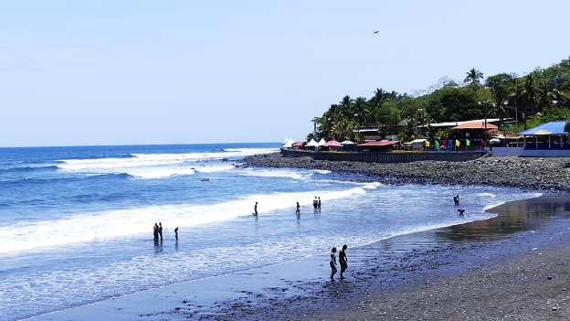
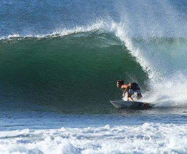
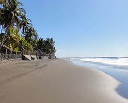

La Libertad
Datos historicos
El municipio cubre un área de 162 km² y la cabecera tiene una altitud de 10 msnm. Las fiestas patronales se celebran en el mes de diciembre en honor a la Inmaculada Concepción. Inician el 30 de noviembre a nivel religioso, pero a nivel civil inician el primero de diciembre. El gran carnaval bailable se realiza en las vísperas de la solemnidad. En los últimos años, y sobre todo en los años, 2018 y 2019 sus fiestas patronales se han vestido de gala con el segundo carnaval más grande de El Salvador, solo por debajo del carnaval de San Miguel. Para ese día, no se encuentra ni una sola cuadra sin personas, todas están abarrotadas por los mismos porteños, capitalinos y personas del interior del país que llegan a disfrutar de su buen ambiente hasta el amanecer con los mejores grupos y discos nacionales e internacionales.
Esta zona fue mencionada por el religioso Pedro Cortés y Larraz el año 1770, como la "hacienda Tepehaua", una de las más importantes de la parroquia de San Jacinto. De hecho, la región era conocida como "rada de Tepehaua", antes de ser habilitada por el Congreso de la República Federal de Centro América como Puerto de La Libertad el 24 de febrero de 1824. El mismo parlamento lo autorizó para el comercio exterior en el litoral del océano Pacífico en 1831. El primer buque de vapor arribó el 7 de junio de 1857.
El topónimo Tepehahua tiene los significados de "El cerro de los encinos" o "Los ahuas del cerro o de la montaña"
Municipios
Los municipios de Ahuachapán son los siguientes:
- Antigüo Cuscatlán.
- Chiltiupán.
- Ciudad Arce.
- Colón.
- Comasagua.
- Huizúcar.
- Jayaque.
- Jicalapa
- La Libertad.
- Santa Tecla.
- Nuevo Cuscatlán.
- San Juan Opico.
- Quezaltepeque.
- Sacacoyo
- San josé Villanueva.
- San Matías.
- San Pablo Tacachico
- Talnique.
- Tamanique.
- Teotepeque.
- Tepecoyo.
- Zaragoza
Turismo
Las Playas de La Libertad
Las playas de La Libertad brindan olas de clase mundial para practicar surf y Punta Roca, ubicada a pocos minutos al oeste del muelle, es probablemente el más famoso de todos. La dinámica localidad portuaria de La Libertad, igualmente conocida como Puerto de la Libertad y situada en el pliegue ribereño del estado de La Libertad en El Salvador, se está reconciliando en uno de los mejores destinos de surf de América Central para ambulantes internacionales. A solo media hora de San Salvador, las olas de surf de La Libertad son las más notorios de todas las playas de El Salvador, sin embargo sus multitudes todavía se disponen primordialmente de locales y mochileros. Debido a la persistente notoriedad de El Salvador y su falta de infraestructura turística sólida, descubrirá menos turistas en La Libertad en comparación con otras playas de América Central. Eso simboliza que hay menos resorts de lujo de los que hallará, por ejemplo, en Jaco Beach en Costa Rica, pero eso igualmente significa que los visitantes disfrutan de una práctica centroamericana mucho más auténtica.
Surf
En tierra, la escena del viajero de La Libertad trata sobre la vie boheme: música reggae, pies descalzos, cervezas frías y hamacas calentadas por el sol. Sin embargo, la verdadera fiesta en La Libertad está en el mar. Muchos surfistas optan por reservar un tour de surf guiado por medio de una compañía como Punta Mango, que brinda paquetes personalizados y los descansos de surf de La Libertad, así como viajes extendidos al Salvaje Oriente de El Salvador. Igualmente brindan clases de surf para surfistas principiantes. La localidad de La Libertad ofrece una gama completa de alojamientos, pero también tiene un ambiente sucio que no es demasiado atractivo. Muchos optan por quedarse en las playas cercanas, que merecen una visita y una excursión en las olas sin importar qué.
El Zunzal

El Zunzal llamado así por el pueblo de El Zunzal, este descanso es el favorito de los novatos del surf. En el otro extremo de la playa de El Sunzal, El Tunco es un territorio de reunión preferido para los tipos liberales que desean escapar del bullicio de La Libertad.
El Zonte
Justo en la zona norte de La Libertad, El Zonte es mucho más ordenado, despejado y seguro, pero sus olas son igual de provocadores para los surfistas. Otros territorios populares para surfear cerca de esta ciudad son Punta Roca, La Bocana y La Paz, así como un gran conjunto de otros que tendrás que convencer a los expertos locales. Las mejores arenas para tomar el sol están en Playa San Diego, al este.
Cultura
Tradiciones y costumbres
Dentro de las manifestaciones culturales del Departamento La Libertad en El Salvador, podemos mencionar las siguientes:
- Forma tradicional de vestir
- Baile de los Viejos con Máscaras
- Las pupusas y lo gastronómico
- Pescaditas y la yuca frita con cochino
- El día de los muertos y la semana santa
- La Cruz de Mayo
Geografía
El departamento La Libertad cuenta con una extensión territorial de 112 kilómetros cuadrados, ocupando así el sexto lugar en cuanto a tamaño del territorio nacional. Está considerado
como uno de los territorios más fértiles de El Salvador. El clima que predomina en la región no es constante, ya que está dividido en tres categorías según la altitud.
El ochenta por ciento del territorio es de un clima muy agradable que ronda por los 22° grados C. Ya que se encuentra a una altura máxima de unos ochocientos metros sobre el nivel del mar.
Una segunda porción ronda por los 20° de temperatura con una altitud promedio de 1200 metros sobre el nivel del mar, y ocupa un quince por ciento de su territorio.
Mientras que sólo un cinco por ciento goza de un clima más bien frío, que puede llegar hasta los catorce o trece grados de temperatura en algunas épocas del año y con alta probabilidad
de copiosas lluvias. Su pluviosidad anualmente está por el orden de unos dos mil milímetros.